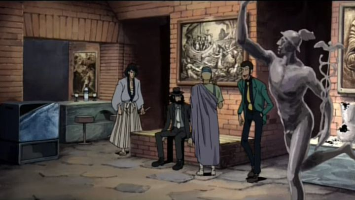

Disclaimer: This review covers the 2002 feature-length OVA "Lupin the Third - Return of Pycal" (also known as "Lupin the Third - The Magician Lived").I've seen a good number of the countless "Lupin the Third" films and OVA's at this point, and for a bit, wasn't keen on seeing more. But I gave in to watching "Return of Pycal," which American distributor Discotek states on the box as being the first "OVA" for Lupin, as opposed to the many theaterical and TV films (Wikipedia states "The Fuma Conspiracy" as the first OVA, and "Pycal" the second, although it also lists "Fuma" as one of the theatrical films, so I'll take Discotek's word on this one). A brief read online suggests that "Return of Pycal" had the reputation as one of the worst Lupin entries ever, enough for me to be curious to watch for myself. And no, I swear the nude woman on the Bluray cover had nothing to do with my choice (there is some brief nudity, but there are other entries in Lupin's world that should excite viewers more in that department).Fully appreciating the story requires knowing that Pycal was an existing villain in one of the episodes from the original "Part I" series; this would be one of multiple times the studio relied on nostalgia to make some of the newer stories more meaningful. I did already watch "Part I," but didn't recall Pycal at all, a magician with dangerous tricks up his sleeve that met his demise back in that original episode. Anyway, the story revolves around his return, and Lupin's run in with him while searching for the seven "Celestial Crystals," beautiful gems with a hidden message unlocking some special secret. The secret of the gems involves music, and the power of sound to either heal or ruin a person, as if by magic. Aside from that mystery, Lupin has to worry about Pycal seeking out revenge against him and Fujiko, as well as why Pycal wants the crystals to begin with. It's relatively standard fare, and all the usual suspects show up (Jigen, Goemon, Zenigata).  But my goodness, the movie is directed poorly. I don't know exactly what went wrong: where they limited by the 50-minute runtime, a low budget, or a lack of directing skill? The pacing and storytelling choices is bizarre, rushing through most elements and requiring a huge suspension of disbelief. Some of that might be due to a purposely experimental nature: after all, this was first released directly to home video, on a special DVD with a CD-ROM that unlocked other goodies. Aside from the 50 minutes, there's 3 multiple "secret" endings, included on this Bluray, adding an extra 8 minutes of footage: that's a huge chunk of an already short runtime! That's not to say "Return of Pycal" is a complete write-off. The setting of Greece is fun, and includes a few memorable moments, like Lupin dressing as an Italian clown to hide in a street festival. And I actually appreciated some of the more experimental techniques, using early digital effects for some backgrounds and flashback montages, almost like this was an abstract art-gallery film (whether this is avant-garde or amateurish is up to you). However, there's a heavy use of VERY early CGI as well, and a seemingly low budget even for the regular scenes just results in the whole thing not looking very good. Really, there's so many "Lupin" specials and films that kind-of cover the same stories and plot beats, that you could narrow down the stuff you should see on one hand. And "Return of Pycal" is pretty near the bottom of the big list. This is largely skippable, only worth it for completionists, or for fans who like weirder-directed versions of Lupin ("Green vs Red" being the closest comparison, although that one's far more ambitious).
- "Ani" More reviews can be found at : https://2danicritic.github.io/ Previous review: review_Lupin_the_Third_-_Part_IV_-_The_Italian_Adventure Next review: review_Lupin_the_Third_-_The_Castle_of_Cagliostro